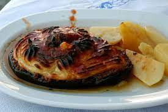

Welcome To Our Restaurant
We specialize in three major types of dishes
Italian Dishes
Makaron

Piyaz salad is one of the Turkish city's most famous dishes -- and its secret ingredient is its beans. They're not just any old butter bean, but a small version known as candir, named after the inland province where they're grown. Delicate and flavorful, candir are mixed, together with tahini thinned with a little water, lemon juice, vinegar, salt, garlic, flat-leaf parsley and olive oil. In the very traditional version, a soft boiled egg is roughly chopped up and mixed through just before serving.
Greek Dishes
Moussaka
Piyaz salad is one of the Turkish city's most famous dishes -- and its secret ingredient is its beans. They're not just any old butter bean, but a small version known as candir, named after the inland province where they're grown. Delicate and flavorful, candir are mixed, together with tahini thinned with a little water, lemon juice, vinegar, salt, garlic, flat-leaf parsley and olive oil. In the very traditional version, a soft boiled egg is roughly chopped up and mixed through just before serving.
Turkish Dishes
Piyaz

Piyaz salad is one of the Turkish city's most famous dishes -- and its secret ingredient is its beans. They're not just any old butter bean, but a small version known as candir, named after the inland province where they're grown. Delicate and flavorful, candir are mixed, together with tahini thinned with a little water, lemon juice, vinegar, salt, garlic, flat-leaf parsley and olive oil. In the very traditional version, a soft boiled egg is roughly chopped up and mixed through just before serving.